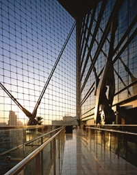
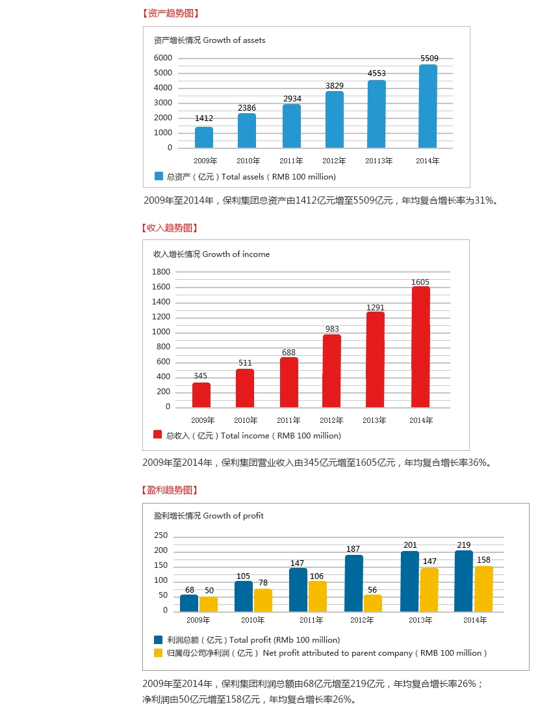

中国保利集团公司系国务院国有资产监督管理委员会管理的大型中央企业，于1992年经国务院、中央军委批准组建。30多年来，保利集团已形成以国际贸易、房地产开发、文化艺术经营、资源领域投资开发、民用爆炸物品产销及相关服务为主业的“五业并举、多元发展”格局，业务遍布全球100多个国家及国内100余个城市。在美国财富杂志发布的2015年世界500强排行榜上，保利集团以2014年度260.5亿美元营业收入排名第457位。
目前，保利集团共有多类企业600余家。员工6万余名。控股上市公司4家，分别为：保利房地产（集团）股份有限公司（股票代码：S.H.600048）、保利置业集团有限公司（股票代码：H.K.00119）、保利文化集团股份有限公司（股票代码：H.K.03636）、贵州久联民爆器材发展股份有限公司（股票代码：S.Z.002037）。
